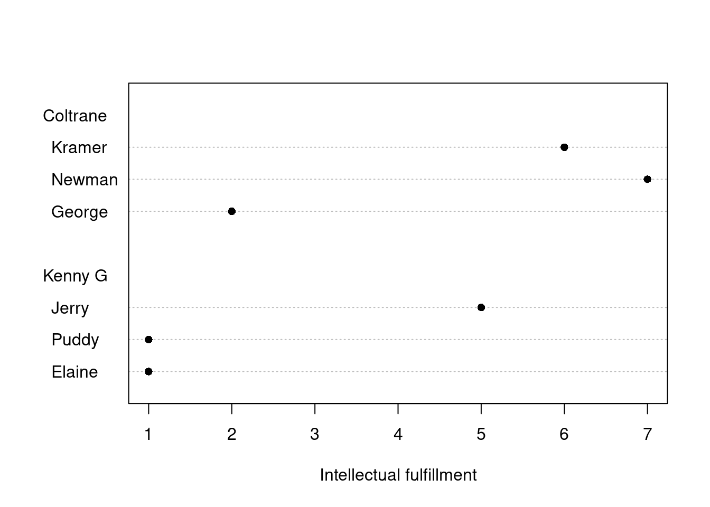
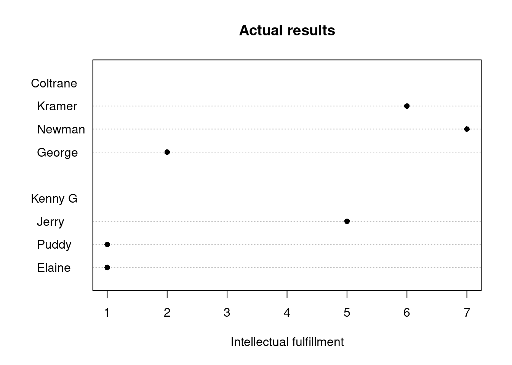
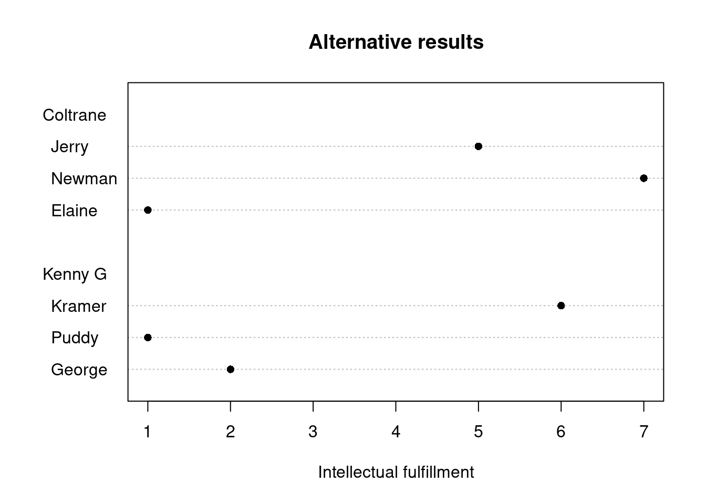
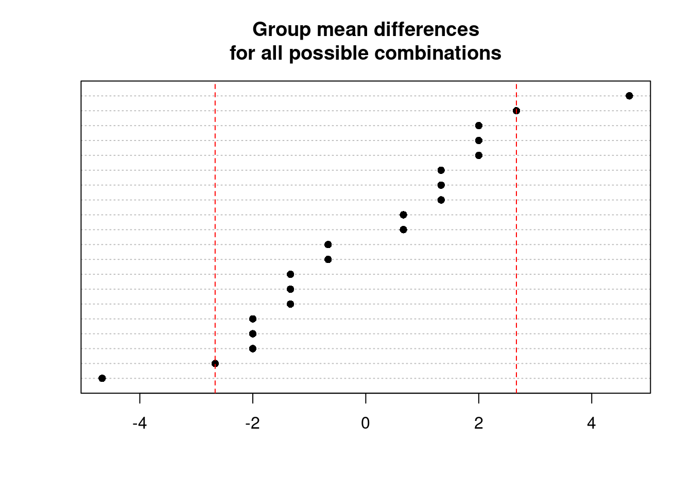
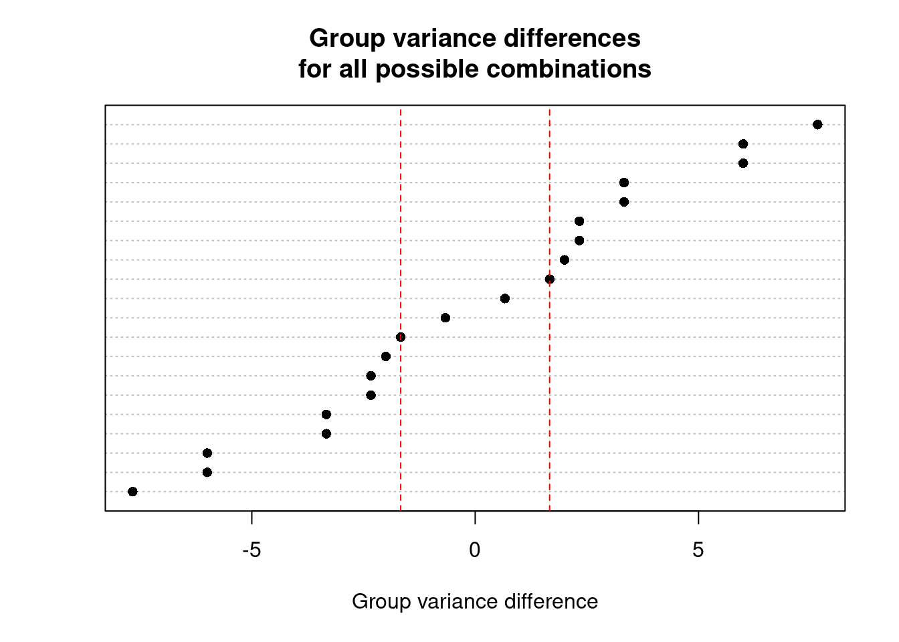

Explaining key concepts using permutation tests
It’s that time of year again where I have the honour of explaining the nuts and bolts of inferential statistics in the optional introductory statistics class that I teach. Two of my objectives are to familiarise my students with core concepts of statistical inference and to make sure that they don’t fall into the trap of reading too much into p-values. In addition to going through the traditional route based on the Central Limit Theorem, I think that several key concepts can be also illustrated in a less math-intensive way – namely by exploring the logic of permutation tests.
My goal isn’t to make the case for a wholesale adoption of permuation tests (which I explain in more detail below). Rather, I hope that by discussing permutation tests we can gain a better understanding of some key concepts in inferential statistics that are often neglected, and that we can do so without too many distracting equations and assumptions. Some of the points that a discussion of permutation tests raises are
- the basic logic of inferential (frequentist) statistics;
- the principle that inference can and must be motivated by the experimental design (including the ‘independence assumption’ shared by most commonly taught statistical tests);
- the validity of statistical tests in non-randomised designs;
- the validity of statistical tests in the absence of random sampling.
But first, we need some fictitious data.
A small-scale randomised experiment
Let’s say we want to investigate whether the kind of music you happen to listen to affects how intellectually fulfilling you perceive your life to be. We design an experiment with two conditions: in one condition, people are asked to listen to John Coltrane’s A Love Supreme; in the other condition, they are asked to endure mind-numbing muzak, viz. Kenny G dubbing himself over Louis Armstrong’s What a Wonderful World. After listening to the song, they are asked to rate how intellectually fulfilling their life is on a scale from 1 (very unfulfilling) to 7 (very fulfilling).
We recruit 6 participants – that’s on the small side, of course, but it’ll keep things tractable. We want to assign three participants to the Coltrane song and three to the Kenny G one, and to avoid a systematic bias in the results, we randomly divide the participant sample into two equal parts.
The answers to the questionnaire item are shown in this dotplot:
It surely seems that listening to John Coltrane is associated with higher intellectual fulfillment ratings than listening to Kenny G. Moreover, since we got these results in a randomised experiment, we could even make causal claims, namely that listening to Coltrane vs Kenny G causes higher intellectual fulfillment ratings.
The null hypothesis
But before we draw such a conclusion, we need to address a more trivial explanation of these data: perhaps they are just a fluke – perhaps the participants in the Coltrane condition happened to be the participants who tended to perceive their life to be more intellectually fulfilling anyway and we were just lucky to assign them to the Coltane condition.
Fundamentally, it is this objection – that sheer randomness might also account for these data – that inferential statistics seeks to address. This proposed explanation is known as the null hypothesis.
(I’m delibrerately cutting corners here: the null hypothesis doesn’t always have to be ‘no effect – randomness only’. In practice, though, you’d be hard-pressed to find other null hypotheses.)
The way how inferential (frequentist) statistics usually proceeds is by arguing by contradiction: we try to calculate how surprising our results would be if randomness alone – and no systematic effect – were at play. In other words, we compute the probability (p) of our results (and even more staggering results) under the assumption that the null hypothesis is actually true. If this probability is small (say smaller than an arbitrary probability of 10%), we’d conclude that ‘randomness alone’ isn’t a viable explanation of our results and that systematic effects are at play, too.
Why random assignment works
Typically, we would run an off-the-shelf statistical test (e.g. a t-test) to calculate this probability. Most of these tests derive from the Central Limit Theorem (CLT): if we’re willing to make some assumptions, the CLT tells us how the means from data points sampled randomly from a larger population are distributed. From this knowledge, we can derive the probability that the means of our two groups would differ by at least as much as they do if randomness were the only factor at play. For the purposes of this blog post, however, I want to focus on an inferential technique that makes fewer assumptions than CLT-derived tests and that isn’t restricted to differences between means.
Its logic is as follows. If listening to the Coltrane vs Kenny G song didn’t affect the intellectual fulfillment ratings (= the null hypothesis), then any difference between the two groups must be due to the random assignment of participants to conditions. If this were the case, the data that we happened to observe (difference between group means: 2.67):

were as likely to occur as those where the assignment of participants to condition woud have turned out differently, say (difference between group means: 1.33):

Rather than relying on the Central Limit Theorem, we could write down every possible recombination of the scores of 2, 7, 6, 1, 1 and 5 into two groups, calculate the difference between the two group means for each possibility, and see how unusual the result we actually got is. (This, incidentally, is also the logic behind the graphical statistical inference tests I blogged about a while ago.)
Exhaustive recombining
For small samples, it is possible to list every possible combination of scores into two groups of equal size:
2 observations can be allocated in 2 ways:
- A / B
- B / A
4 observations can be allocated in 6 ways (note that the order within the groups doesn’t matter):
- A, B / C, D
- A, C / B, D
- A, D / B, C
- B, C / A, D
- B, D / A, C
- C, D / A, B
6 observations can be allocated in 20 ways:
- A, B, C / D, E, F
- A, B, D / C, E, F
- etc.
8 observations can be allocated in 70 ways, etc.
We can compute the number of possible combinations using R’s choose() function, e.g.:
# How many ways to allocate 12 observations
# to two groups of equal size (i.e. 6):
choose(12, 6)[1] 924As you can imagine, the number of possible combinations sky-rockets as the sample size increases, and it quickly becomes prohibitively computionally expensive to generate every single combination. For small samples, though, it’s still pretty easy. Using some relatively easy R code, we can recombine our 6 observations into two groups of 3 in each of 20 possible ways and compute the difference between the group means. If you’re not into R, feel free to skip the next few paragraphs – the rationale is more important than the actual computer code.
Skippable – R code: Computing mean difference for every possible recombination
First I define a function that takes a number of data points (‘vector’ in R-speak) and a number of ‘indices’ that indicate which data points belong to Group 1 (the others belong to Group 2):
# Define a function that computes the difference
# in means (adaptable to other functions)
# between one part of a vector (indices in Group1)
# and the remaining part (indices NOT in Group1)
mean.diff <- function(data, Group1) {
diff.mean <- mean(data[Group1]) -
mean(data[- Group1])
return(diff.mean)
}To illustrate how this function works, we read in our actual data and specify which data points belong to Group 1:
# Read in actual data
actual.data <- c(2, 7, 6, 1, 1, 5)
# The first, second and third data points
# are in the 'Coltrane' group:
coltrane <- c(1, 2, 3)
# Compute mean difference
# between Coltrane group and rest:
mean.diff(actual.data, coltrane)[1] 2.666667Of course, we could’ve computed this difference in an easier way, but defining this function makes the next couple of steps easier.
Next, we generate a list of every possible way in which the Coltrane group could’ve been made up. For this, I use the combn() function; the numbers refer to the 1st, 2nd, …, 6th data point, not to the values of the data points themselves:
# For the 1st, 2nd ... 6th data points
combinations <- combn(1:6,
# Allocate 3 data points to Group 1
3,
# (and return output as a list)
simplify = FALSE)
# uncomment next line to show all 20 combinations
# combinationsNow, we apply the mean.diff() function that we wrote earlier to our data set (actual.data) for every possible combination of indices listed in combinations (i.e., 1-2-3, 1-2-4, 1-2-5 etc.):
# apply function mean.diff
diffs <- mapply(mean.diff,
# for every combination of indices in combinations
Group1 = combinations,
# apply to actual.data
MoreArgs = list(data = actual.data))Results
We have now calculated every possible difference in group means possible. Here they are, sorted from lowest to highest:

We actually observed a difference of 2.67 between the two group means; the vertical red lines indicate an absolute group mean difference of 2.67. As you can see, four out of 20 possible group mean differences have absolute values of 2.67 or higher. Put differently, the probability to observe an absolute group mean difference of 2.67 or higher if randomness alone were at play is 4/20 = 20%.
This is our p-value: the probability with which we would have obtained our observed difference (or even more extreme ones) if randomness alone were at play. So even if no systematic effect exists, we would still obtain an absolute mean difference of 2.67 or larger in 20% of cases. This isn’t terribly unlikely (and higher than the 10% threshold we specified above), so the null hypothesis that randomness alone is at play is still a viable explanation of our results. Note that this doesn’t necessarily mean that the null hypothesis is the correct explanation, i.e. we haven’t in any way proven that there isn’t a systematic effect.
What I like about these ‘permutation tests’
Less restrictive assumptions
First, from a practical perspective, these permutation tests are relatively assumption-free. Statistical tests derived from the Central Limit Theorem all need to assume that the sample mean distribution is well approximated by a normal distribution. This needn’t be a problem for large samples, but it usually requires a leap of faith for small samples. Permutation tests, by contrast, rely on the much weaker assumption that the data points are mutually interchangeable under the null hypothesis (i.e. come from the same distribution). This may sound somewhat esoteric, but it essentially means that a participant who happened to be part of Group 1 could as easily have been part of Group 2.
Flexibility with respect to what is being compared
Second, while we focused on the difference between the group means, we could easily have use the difference between the group medians as a test statistic, or pretty much every other test statistic imaginable – i.e. permutation tests are extremely flexible. This code, for instance, operates along exactly the same lines, but compares the variances of the groups:
# Define a function to compute
# difference in group variances
var.diff <- function(data, Group1) {
diff.var <- var(data[Group1]) -
var(data[- Group1])
return(diff.var)
}
# apply function median.diff
diffs <- mapply(var.diff,
# for every combination of indices in combinations
Group1 = combinations,
# apply to actual.data
MoreArgs = list(data = actual.data))
dotchart(sort(diffs), pch = 16,
xlab = "Group variance difference",
main = "Group variance differences\nfor all possible combinations")
abline(v = var.diff(actual.data, coltrane),
col = "red", lty = 2)
abline(v = -var.diff(actual.data, coltrane),
col = "red", lty = 2)
So in 18 out of 20 cases, we would have observed variance differences as large as or larger than the difference we actually obtained.
The test follows from the design
The first two points are primarily of practical importance. But, more importantly, permutation tests also illustrate all-important theoretical concepts. Specifically, they stress that there is a clear logical link between the statistical test we use and the experimental design we opted for: using a permutation test is entirely warranted by the random assignment of participants to two equal-sized groups. Stressing the link between experimental design and statistical inference – rather than considering them separately – is of huge pedagogical, as well as practical, use, I believe.
In fact, this link between design and analysis means that it’s not so much the case that permutation tests are a substitute for more commonly used tests such as the t-test, it’s the other way round. As Fisher (1936; quoted by Ernst 2004) put it,
the statistician does not carry out this very simple and very tedious process [i.e. running a permutation test, JV], but his conclusions have no justification beyond the fact that they agree with those which could have been arrived at by this elementary method.
In class, this point could segue into an interesting discussion about the value of p-values in non-randomised (quasi-)experiments where randomisation isn’t available as the ultimate rationale for conducting statistical tests.
The test has to follow from the design
Permutation tests are eminently useful for illustrating why experimental design features matter. Let’s say that, in the example above, Elaine and Puddy, and Kramer and Newman were so inseparable that they wanted to listen to the same song. Rather than being combinable in 20 different ways, the six data points would be combinable in only four ways:
- George, Newman, Kramer / Elaine, Puddy, Jerry (difference in means: 2.67)
- George, Elaine, Puddy / Newman, Kramer, Jerry (difference: -4.67)
- Elaine, Puddy, Jerry / George, Newman, Kramer (difference: -2.67)
- Newman, Kramer, Jerry / George, Elaine, Puddy (difference: 4.67)
The 14 combinations where Newman and Kramer, and Elaine and Puddy aren’t in the same condition wouldn’t be part of the range of possible randomisations. The observed absolute difference in group means of 2.67 wouldn’t then be associated with a p-value of 20%, but with one of 100%!
Less prohibitive restricting would also affect our inferences. If, for instance, Jerry and Newman would refuse to listen to the same song, only 12 possible randomisations remain, and we would have to draw our conclusions with respect to these 12 possibilities – not with respect to the full set of 20 possibilities.
In both cases, some data points weren’t independent of one another: the occurrence of one implied the occurrence (or absence) of some others, which can drastically affect our inferences. This point is hugely relevant to many studies in applied linguistics where the participants cannot be allocated to experimental conditions on an individual basis but only in whole groups, e.g. classes or schools (so-called ‘cluster-randomised designs’). This design feature, in fact, even occurs in some studies in not-so-applied linguistics and psychology, and it has to be taken explicitly into account in the analysis. Thus, not only can design features motivate the specification of a statistical test, they should do so – even when not using permutation tests (cf. the quote from Fisher above).
A case more subtle than cluster-randomisation occurs when, for perfectly valid reasons, researchers insist on equating two groups with respect to one variable. If, for instance, 12 men and 20 women are available for an experiment, the researcher can randomise the participants to two groups with the restriction that each group should have 6 men and 10 women so as to balance out the sex variable (so-called ‘block designs’). This design feature, too, needs to be taken into account.
For a more in-depth discussion, see my Analyzing randomized controlled interventions: Three notes for applied linguists (see pages 6-7 for block designs and pages 11ff. for cluster randomisation).
Random assignment vs random sampling
Finally, the justification of the permutation test above was the random assignment of participants to experimental conditions – not that the participants were randomly sampled from a larger population. Consequently, the validity of the conclusions based on this permutation test (and, following Fisher, of other statistical tests, too) is restricted to the sample in question.
While permutation tests can also be used when random sampling was used, they require a different sort of justification (see Ernst 2004). This is beyond the scope of this (already way too long) blog post, but it can be useful for driving home the point that drawing inferences about an effect in a sample and drawing inferences about an effect in a larger population require different kinds of justification. In plain and somewhat simplified terms, unless our participants were randomly sampled from a larger population – and they rarely if ever are – we are technically restricted to inferring whether an effect can be observed in the sample we’ve got.
Conclusion
All in all, I think there are a lot of important principles that a discussion of permutation tests can generate. Of course, the example I gave was rather simple (small sample size, straightforward design), but for pedagogical purposes, I think it is meaty enough.
References and further reading
R. A. Fisher’s Design of experiments discusses randomisation as the ‘physical basis of the validity of the test’ (see Chapter 2 for the ‘lady tasting tea’ example).
Michael Ernst’s Permutation methods: A basis for exact inference illustrates basic permutation tests and covers the distinction between random assignment and random sampling.
Gary Oehlert’s First course in design and analysis of experiments amply covers the rationale for random assignment and the importance of considering design features when analysing experiments.
My paper on Analyzing randomized controlled interventions covers many of the points raised here, though not within a permutation-test framework.
Software versions
devtools::session_info()─ Session info ───────────────────────────────────────────────────────────────
setting value
version R version 4.3.1 (2023-06-16)
os Ubuntu 22.04.3 LTS
system x86_64, linux-gnu
ui X11
language en_US
collate en_US.UTF-8
ctype en_US.UTF-8
tz Europe/Zurich
date 2023-08-26
pandoc 3.1.1 @ /usr/lib/rstudio/resources/app/bin/quarto/bin/tools/ (via rmarkdown)
─ Packages ───────────────────────────────────────────────────────────────────
package * version date (UTC) lib source
cachem 1.0.6 2021-08-19 [2] CRAN (R 4.2.0)
callr 3.7.3 2022-11-02 [1] CRAN (R 4.3.1)
cli 3.6.1 2023-03-23 [1] CRAN (R 4.3.0)
crayon 1.5.2 2022-09-29 [1] CRAN (R 4.3.1)
devtools 2.4.5 2022-10-11 [1] CRAN (R 4.3.1)
digest 0.6.29 2021-12-01 [2] CRAN (R 4.2.0)
ellipsis 0.3.2 2021-04-29 [2] CRAN (R 4.2.0)
evaluate 0.15 2022-02-18 [2] CRAN (R 4.2.0)
fastmap 1.1.0 2021-01-25 [2] CRAN (R 4.2.0)
fs 1.5.2 2021-12-08 [2] CRAN (R 4.2.0)
glue 1.6.2 2022-02-24 [2] CRAN (R 4.2.0)
htmltools 0.5.5 2023-03-23 [1] CRAN (R 4.3.0)
htmlwidgets 1.6.2 2023-03-17 [1] CRAN (R 4.3.1)
httpuv 1.6.11 2023-05-11 [1] CRAN (R 4.3.1)
jsonlite 1.8.7 2023-06-29 [1] CRAN (R 4.3.1)
knitr 1.39 2022-04-26 [2] CRAN (R 4.2.0)
later 1.3.1 2023-05-02 [1] CRAN (R 4.3.1)
lifecycle 1.0.3 2022-10-07 [1] CRAN (R 4.3.0)
magrittr 2.0.3 2022-03-30 [1] CRAN (R 4.3.0)
memoise 2.0.1 2021-11-26 [2] CRAN (R 4.2.0)
mime 0.10 2021-02-13 [2] CRAN (R 4.0.2)
miniUI 0.1.1.1 2018-05-18 [1] CRAN (R 4.3.1)
pkgbuild 1.4.2 2023-06-26 [1] CRAN (R 4.3.1)
pkgload 1.3.2.1 2023-07-08 [1] CRAN (R 4.3.1)
prettyunits 1.1.1 2020-01-24 [2] CRAN (R 4.2.0)
processx 3.8.2 2023-06-30 [1] CRAN (R 4.3.1)
profvis 0.3.8 2023-05-02 [1] CRAN (R 4.3.1)
promises 1.2.0.1 2021-02-11 [1] CRAN (R 4.3.1)
ps 1.7.5 2023-04-18 [1] CRAN (R 4.3.1)
purrr 1.0.1 2023-01-10 [1] CRAN (R 4.3.0)
R6 2.5.1 2021-08-19 [2] CRAN (R 4.2.0)
Rcpp 1.0.11 2023-07-06 [1] CRAN (R 4.3.1)
remotes 2.4.2 2021-11-30 [2] CRAN (R 4.2.0)
rlang 1.1.1 2023-04-28 [1] CRAN (R 4.3.0)
rmarkdown 2.21 2023-03-26 [1] CRAN (R 4.3.0)
rstudioapi 0.14 2022-08-22 [1] CRAN (R 4.3.0)
sessioninfo 1.2.2 2021-12-06 [2] CRAN (R 4.2.0)
shiny 1.7.4.1 2023-07-06 [1] CRAN (R 4.3.1)
stringi 1.7.12 2023-01-11 [1] CRAN (R 4.3.1)
stringr 1.5.0 2022-12-02 [1] CRAN (R 4.3.0)
urlchecker 1.0.1 2021-11-30 [1] CRAN (R 4.3.1)
usethis 2.2.2 2023-07-06 [1] CRAN (R 4.3.1)
vctrs 0.6.3 2023-06-14 [1] CRAN (R 4.3.0)
xfun 0.39 2023-04-20 [1] CRAN (R 4.3.0)
xtable 1.8-4 2019-04-21 [1] CRAN (R 4.3.1)
yaml 2.3.5 2022-02-21 [2] CRAN (R 4.2.0)
[1] /home/jan/R/x86_64-pc-linux-gnu-library/4.3
[2] /usr/local/lib/R/site-library
[3] /usr/lib/R/site-library
[4] /usr/lib/R/library
──────────────────────────────────────────────────────────────────────────────